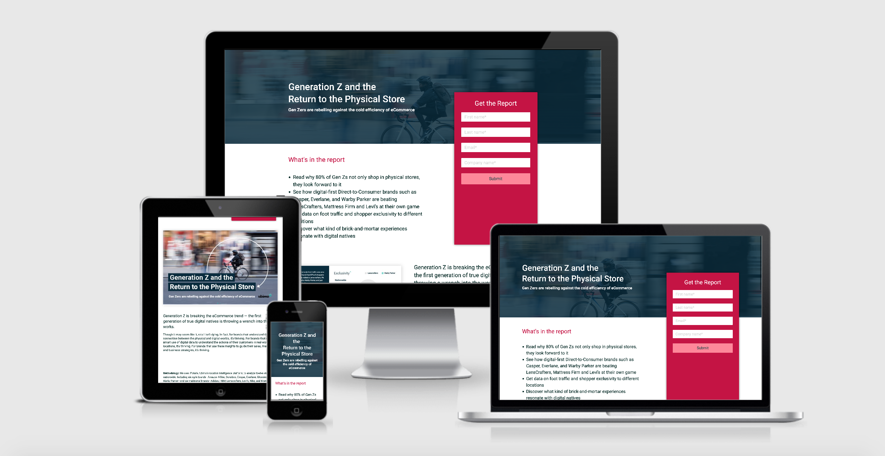
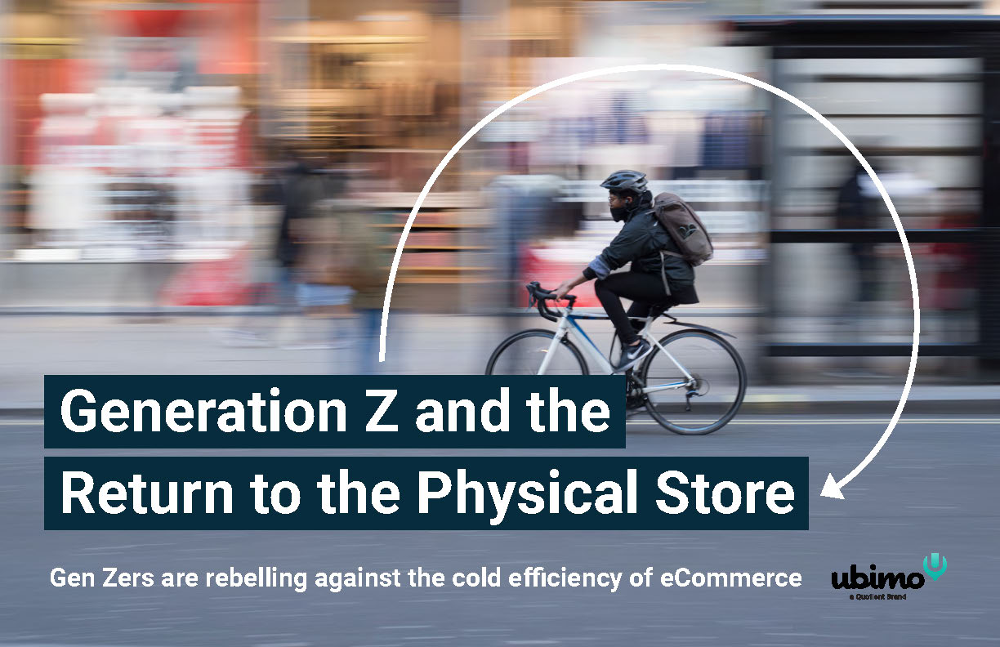
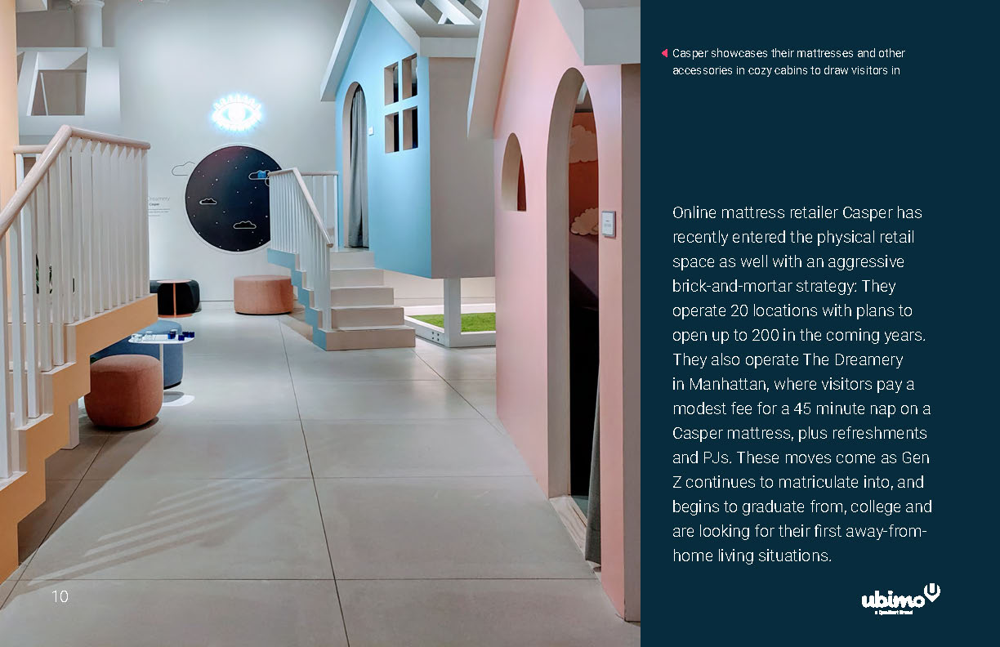
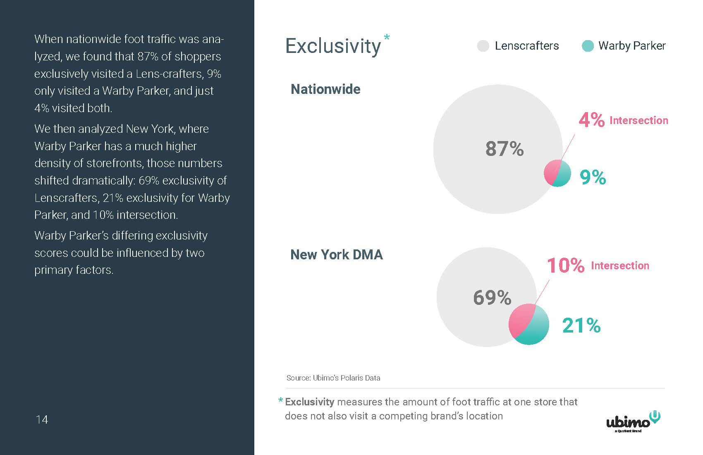
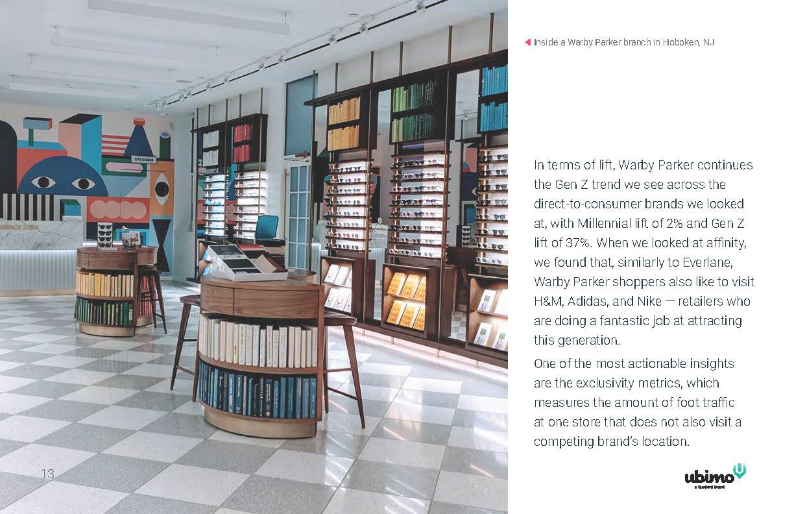
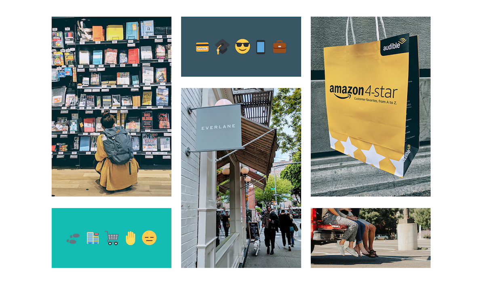
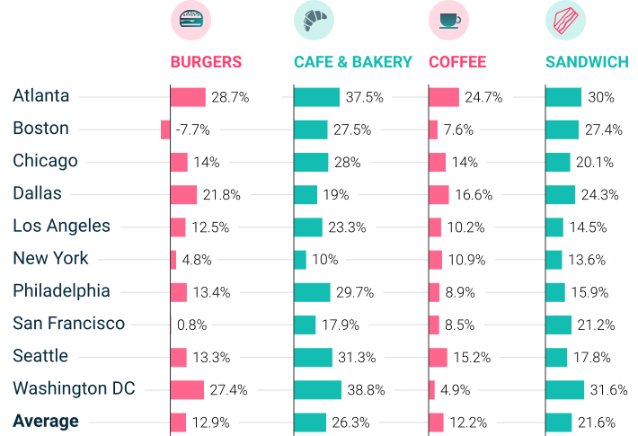
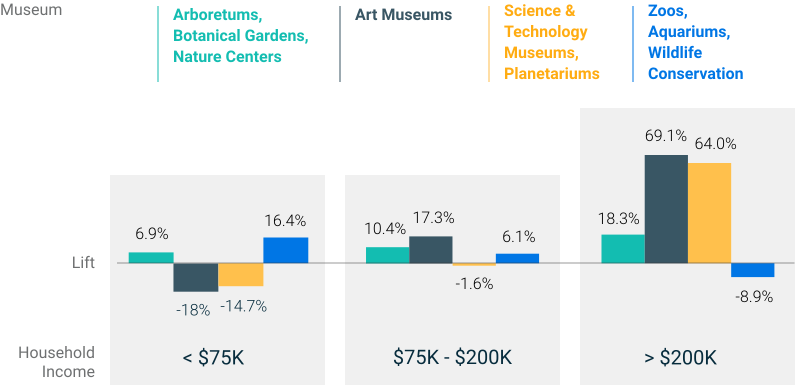
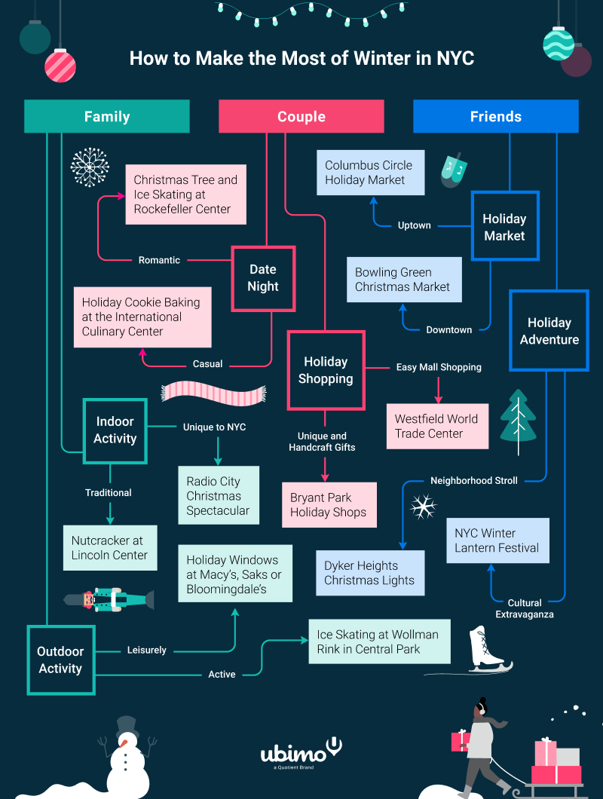

Examples of data insights I visualized for the company blog. I use the brand colors and style as a base to translate them into an eye-catching visual.
Food Preferences by City

U.S. Museum Visits by Household Income

Celebrate the Holidays in NYC Flowchart

Since the pandemic hit, our marketing team built a live tracker that answers urgent questions industry leaders have: Has movement around outdoor advertising screens gone down? Our data shows movement nationally vs locally and by type of screen.
I got to customize the layout and look of the data modules, and the webpage it's embedded on. Biggest challenge was working around Google Data Studio's limitations.